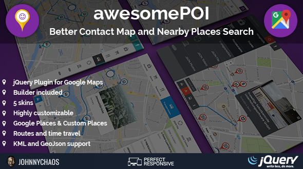
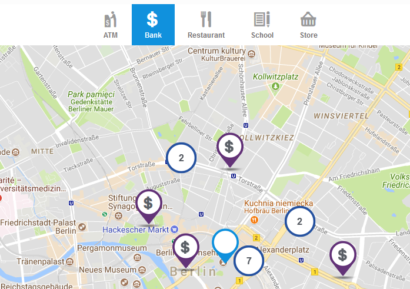

awesomePOI
Better Contact Map and Nearby Places

awesomePOI is a jQuery plugin that boost up your Google Map. It allows you to display near points of interest (POI), show their details and find the route.
It's a great addon for every Map, especially contact maps, hotels, real estate and more. You can use Google Places Library or import your own places from JSON file, so you can create every map you want, for example locations map from your holiday (example).
Plugin is highly customizable. You can choose one of 5 beautiful responsive skins, or create new one. There qre 140 Pins and 175 icons to choose from. You can even change map style and decide which elements you want on the map.
Seems complicated? Don't worry, plugin has a BUILDER. You can choose options and create a map without any coding!
Check the demo!
-
Map Builder included - no coding skills needed.
-
Browse Google Places.
-
Browse Custom Places from JOSN file.
-
Display rotues from Nearby Places, your location or given address.
-
Choose transport mode and view navigation details.
-
Display places details (contact info, places, reviews).
-
Display Street View.
-
Simple or complex map - decide which blocks you want to show.
-
Customize the map - 5 ready skins and option to create new with CSS editing.
-
Customize the map - choose from 140 pins & 175 icons or use your own.
-
Customize the map - Choose icon size and color.
-
Customize the map - use custom Map Styles.
-
Add additonal info, layers and shapes to your map with KML or GeoJSON files.
-
Use callback functions attached to each event.
When you run the script on the local computer, you may not see some icons. Everything works fine when you're on the server.
Plugin comes with the builder. Instaed of editing code you can fill up the form and copy ready code.
You can find builder in the downloaded package in the builder folder.
Builder fields have hints to help you get started. Check also chapter "4. Options & Functions" to lear about all options.
Builder must be run on the srver with the PHP support. It won't work on your local computer unless you run a sever.
4.1 Default markup
Below you will find minimal markup with default classes and ID's. You can change block ID's but you needd to pass new names to the plugin (see 4. Options & Function).
Code that should be placed in the <head></head> tag:
<link href="PLUGIN_PATH/src/awesomePOI.css" media="all" rel="stylesheet" type="text/css" />
<link id="poiskin" href="PLUGIN_PATH/src/skinX.css" media="all" rel="stylesheet" type="text/css" />
<script src="http://ajax.googleapis.com/ajax/libs/jquery/1.10.2/jquery.min.js" type="text/javascript"></script>
Don't forget to change PLUGIN_PATH to correct plugin location. Also change skinX to one of the 5 skins (skin1, skin2, skin3, skin4, skin5).
Code that should be placed in the <body></body> tag, in the place tou want to display the map:
<section class="apoi-section">
<!-- MARKUP -->
<!-- FILTERS --->
<div class="apoi-filter-container">
<div class="apoi-filter" data-types="">
Filter 1
</div>
<div class="apoi-filter" data-types="">
Filter 2
</div>
[...]
</div>
<!-- PLACES LIST CONTAINER -->
<div id="apoi-list"></div>
<!-- PLACE DETAILS CONTAINER -->
<div id="apoi-details-container"></div>
<!-- AUTOCOMPLETE INPUT -->
<div class="apoi-autocomplete-container">
<input id="apoi-autocomplete" type="text" placeholder="Enter a location" />
<a href="#" id="apoi-geolocation"><span class="apoi-map-icon map-icon-crosshairs"></span></a>
</div>
<!-- TRANSPORT MODE -->
<div class="apoi-transport-modes">
<input id="apoi-driving" type="radio" name="apoi-mode" value="DRIVING" checked /><label for="apoi-driving"><span class="apoi-map-icon map-icon-taxi-stand"></span></label>
<input id="apoi-bicycling" type="radio" name="apoi-mode" value="BICYCLING" /><label for="apoi-bicycling"><span class="apoi-map-icon map-icon-bicycling"></span></label>
<input id="apoi-transit" type="radio" name="apoi-mode" value="TRANSIT" /><label for="apoi-transit"><span class="apoi-map-icon map-icon-bus-station"></span></label>
<input id="apoi-walking" type="radio" name="apoi-mode" value="WALKING" /><label for="apoi-walking"><span class="apoi-map-icon map-icon-walking"></span></label>
</div>
<!-- MAP / STREET VIEW SWITCH -->
<a href="#" id="apoi-switch-street"><span class="apoi-map-icon map-icon-male"></span></a>
<a href="#" id="apoi-switch-map"><span class="apoi-map-icon map-icon-map-pin"></span></a>
<!-- ROUTE TIME -->
<div id="apoi-route-time"></div>
<!-- MAP CONTAINER -->
<div id="apoi-maps-container"></div>
</section>
Code that should be placed just before the</body> (closing body tag):
<script src="http://maps.googleapis.com/maps/api/js?key=YOUR_API_KEY&sensor=false&libraries=places"></script>
<script src="href="PLUGIN_PATH/src/jquery.awesomePOI.js"></script>
<script>
$( window ).load(function() {
$('#apoi-maps-container').awesomePOI();
});
</script>
Don't forget to change PLUGIN_PATH to correct plugin location.
You can also add some configuration options to the $('#apoi-maps-container').awesomePOI();
Read more about it in 4. Options & Functions.
4.2 Creating filters
While the most of the code you should "leave as it is" (unless you want to move it according to your desing), there is one section you need to edit. It's <div class="apoi-filter-container"> which contains filters (menu elements, that allow you to create navigation for your map). Below is the example of filters from the demo:

Single filter looks like this:
<div class="apoi-filter" data-types="some-type,some-type2">
Filter name
</div>
What you need to change is the Filter name and data-types. If you use Google Places library, all available types you can find here: https://developers.google.com/places/web-service/supported_types (table1). For example if you want to show airports on the map, you will add data-types="airport".
You can attach more than one type to the filter. For example if you want to show all restaurants, cafes and bars, filter will look like this
<div class="apoi-filter" data-types="restaurant,cafe,bar">
Restaurants
</div>
if you use custom JSON file, you have to change it a bit and add data-source="json":
<div class="apoi-filter" data-source="json" data-types="restaurant,cafe,bar">
Restaurants
</div>
5.1 Options
Below you will find all configuration options with descriptions. Here is how to call options (you can only add those you wan't to change from default values):
$('#apoi-maps-container').awesomePOI({
filterClass: 'apoi-filter',
start: 'point',
startTypes: '',
startPointIcon:'../src/icons/icon-pin1-blue.png',
startTypesIcon: '../src/icons/icon-pin1-red.png',
address: '',
pyrmont: {lat: 52.520645, lng: 13.409779},
radius: 500,
streetView: true,
switchStreetClass: 'apoi-switch-street',
switchMapClass: 'apoi-switch-map',
autocomplete: true,
autocompleteId: 'apoi-autocomplete',
userLocation: true,
userLocationId: 'apoi-geolocation',
routeMode: true,
modeName: 'apoi-mode',
placesList: true,
placesListId: 'apoi-list',
placeDetails: true,
placeDetailsId: 'apoi-details-container',
routeTime: true,
routeTimeId: 'apoi-route-time',
route: true,
routeId: 'apoi-route',
multiple: true,
iconSize: 'large',
iconType: 'pin1',
iconColor: 'navy',
kmlFile: '',
geoJOSNFile: '',
jsonFile: '',
cluster: true,
clusterIcon: '../src/icons/pin-empty.png',
zoom: 16,
wheelScroll: false,
debug: true,
mapStyle: false,
});
|
Parameter |
Type |
Default |
Description |
|
filterClass |
string |
'apoi-filter' |
Class of the filters html element. Script will find all those elements and create a filter menu from them. Check chapter 3. for details. |
|
start |
string |
'point' |
Available values: 'point', 'type', 'both'. Choose what should be displayed when the map is loaded. In can be single point (for example your company location) or some points of interest. You can also show both. |
|
startTypes |
string |
|
If you have choosen 'type' or 'both' above in start, specify starting types here, for example 'restaurant,bar'. All list of supported types you can find HERE. |
|
startPointIcon |
string |
'../src/icons/icon-pin1-blue.png' |
Url to the icon that will be used as center point if you choose 'point' or 'both' as start. |
|
startTypesIcon |
string |
'../src/icons/icon-pin1-red.png' |
Url to the icon that will be used for Nearby Places pins if you choose 'type' or 'both' as start. |
|
address |
string |
|
Address for map center. Example "315 N Broadway, New York, USA". You can add this field or lat & lng object in pyrmont |
|
pyrmont |
object |
{lat: 52.520645, lng: 13.409779} |
Location object for map center. You can add this field or place address address. |
|
radius |
number |
500 |
Nearby Places search radius in meters. |
|
streetView |
boolean |
true |
Turns on or off the Street View option. |
|
switchStreetClass |
string |
'apoi-switch-street' |
If streetView is true, you can define the class of the button that will switch view to Street View. |
|
switchMapClass |
string |
'apoi-switch-map' |
If streetView is true, you can define the class of the button that will switch view to Map. |
|
autocomplete |
boolean |
true |
Turns on the input field where you can enter any address and display the route to the map center. |
|
autocompleteId |
string |
'apoi-autocomplete' |
If autocomplete is true, you can define the ID of the input element that will be used for address autocomplete. |
|
userLocation |
boolean |
true |
Turns on the link that allow you to get your current location and display the route to the map center. |
|
userLocationId |
string |
'apoi-geolocation' |
If userLocation is true, you can define the ID of the element that will be used for grabbing your location. |
|
routeMode |
boolean |
true |
Turns on the option to choose transport mode that will be used to display the route and travel hints. |
|
modeName |
string |
'apoi-mode' |
If routeMode is true, you can define the name of the radio buttons that will be used to choose transport mode. Available modes are: DRIVING, BICYCLING, TRANSIT, WALKING |
|
placesList |
boolean |
true |
Turns on the Nearby Places List panel, that shows basic information of the choosen category of places. |
|
placesListId |
string |
'apoi-list' |
If placesList is true, you can define the ID of the element that will be Nearby Places List container. |
|
placeDetails |
boolean |
true |
Turns on the Nearby Place Details panel, that shows detailed informations about the place, like contact info, street view, gallery, reviews and navigation hints. |
|
placeDetailsId |
string |
'apoi-details-container' |
If placeDetails is true, you can define the ID of the element that will be Nearby Place Details container. |
|
routeTime |
boolean |
true |
Turns on the small info about the time travel and the distance, when route is displayed. |
|
routeTimeId |
string |
'apoi-route-time' |
If routeTime is true, you can define the ID of the element that will hold the route time and distance info. |
|
route |
boolean |
true |
Turns on the route information panel. |
|
routeId |
string |
'apoi-route' |
If route is true, you can define the ID of the element that will hold the route info. |
|
multiple |
boolean |
true |
Turs on ability to select ad display multiple filters. |
|
iconSize |
string |
'large' |
Defines the size of the pin. Possible values: 'small', 'medium', 'large'. |
|
iconType |
string |
'pin1' |
Defines the shape of the pin. Possible values: 'pin1','pin2, ... , 'pin14' |
|
iconColor |
string |
'blue' |
Defines the color of th pin. Possible values: 'blue', 'gold', 'green', 'grey', 'navy', 'pink, 'purple', 'red', 'turquoise', 'yellow' |
|
kmlFile |
string |
|
URL to the KML file, that will be added to the map. It must be file url, if you add a path it won't work. More about KML here. |
|
geoJOSNFile |
string |
|
URL or PATH to the geoJSON file, that will be added to the map. More about GeoJSON here. |
|
jsonFile |
string |
|
URL or PATH to the JSON file, that will be added to the map. More in "Chapter 7. Custom Places from JSON". |
|
cluster |
boolean |
true |
Turns on the marker clustering. When there is more markers close to each other, they will be combined to one with the number. |
|
clusterIcon |
string |
'../src/icons/pin-empty.png' |
If cluster is true, you can define the icon used for cluster. |
|
zoom |
number |
16 |
Starting map zoom. |
|
wheelScroll |
boolean |
false |
Turns the map zooming using mouse wheel. |
|
mapStyle |
JOSN |
|
You can add custom map style here. More info here. You can find many ready styles on Snazzy Maps. |
|
debug |
boolean |
false |
Turns on the debug informations displayed in the javascript console. |
5.2 Functions
Plugin comes with a few callback functions that fire after specific events. You can rewrite those functions. Take a look how to use them
$('#apoi-maps-container').awesomePOI({
onMapInit: function( map ) { console.log('onMapInit ' + map); },
onAfterSearch: function() { console.log('onAfterSearch'); },
onAfterSearchJSON: function() { console.log('onAfterSearchJSON'); },
onDetailsShow: function( place ) { console.log('onDetailsShow ' + place); },
onAfterRoute: function( route ) { console.log('onAfterRoute ' + route); },
onGeolocation: function( geolocation ) { console.log('onGeolocation ' + geolocation); },
onAutocomplete: function( loc ) { console.log('onAutocomplete ' + loc); },
onModeChange: function( mode ) { console.log('onModeChange ' + mode); },
});
Here is callback functions overview:
|
Function name |
Parameter |
Description |
|
onMapInit |
Object: map |
Fires right after map initialization. Takes Google Map as a parameter. |
|
onAfterSearch |
|
Fires right after Nearby Places search. |
|
onAfterSearchJSON |
|
Fires right after Nearby Places search when you use JOSN file. |
|
onDetailsShow |
Object: place |
Fires right after displaying Place details. Takes Google Place as a parameter. |
|
onAfterRoute |
Object: route |
Fires right after displaying the route. Takes Google Route as a parameter. |
|
onGeolocation |
Object: geolocation |
Fires right after geolocation search. Takes Google Geolocation as a parameter. |
|
onAutocomplete |
Object: location |
Fires right after autocomplete search. Takes Google Place as a parameter. |
|
onModeChange |
String: mode |
Fires right after transport mode change. Takes mode name as a parameter. Available modes are: DRIVING, BICYCLING, TRANSIT, WALKING. |
If you use Google Places Library by default pins are created automatically. You choose Pin shape, color and size, and icon is added by the plugin, using built in database.
If you use JOSN file, you have to add an icon in the JSON file (see Chapter 6. Custom places from JSON).
In both cases you can overwrite default settings and add your own icon to the every filter.
Example 1: Custom image
<div class="apoi-filter" data-types="restaurant" data-icon-img="../src/icons/icon-pin7-blue.png">
Restaurants
</div>
There is a parameter that you need to fill: data-icon-img="".
Example 2: Change only pin icon
<div class="apoi-filter" data-types="laundry" data-icon-font="map-icon-point-of-interest">
Laundry
</div>
Here you have a paramater data-icon-font="". Pin shape and color will be taken from the plugin config, but icon on the pin will be changed accorging to your choice.
You can put here icons from "Map Icons" collection. All available icons you can find here: http://map-icons.com/
Instead of Google Places you can use JOSN file to display places on the map. You can also combine those two sources and show some pins from Google Palces and some from JOSN file.
If you use custom JSON file, filter should have data-source="json":
<div class="apoi-filter" data-source="json" data-types="restaurant,cafe,bar">
Restaurants
</div>
JSON file must have correct structure:
{
"types": {
"type": [
{
"name": "category name (required)",
"icon": "url to category icon (required)",
"items": {
"item": [
{
"lat": "lat number (required)",
"lng": "lng number (required)",
"name": "Place name (required)",
"formatted_address": "Place address",
"formatted_phone_number": "Place phone number",
"website": "Place website",
"photos": {
"url": [
"Photo url",
"Photo url",
"Photo url"
]
},
"reviews": [
{
"author_name": "Author name",
"rating": "Rating number",
"date": "Rating date",
"text": "Rating description"
},
{
"author_name": "Author name",
"rating": "Rating number",
"date": "Rating date",
"text": "Rating description"
}
]
},
{
"lat": "lat number (required)",
"lng": "lng number (required)",
"name": "Place name (required)",
"formatted_address": "Place address",
"formatted_phone_number": "Place phone number",
"website": "Place website",
"photos": {
"url": [
"Photo url",
"Photo url",
"Photo url"
]
},
"reviews": [
{
"author_name": "Author name",
"rating": "Rating number",
"date": "Rating date",
"text": "Rating description"
},
{
"author_name": "Author name",
"rating": "Rating number",
"date": "Rating date",
"text": "Rating description"
}
]
},
]
}
},
{
"name": "category name (required)",
"icon": "url to category icon (required)",
"items": {
"item": [
{
"lat": "lat number (required)",
"lng": "lng number (required)",
"name": "Place name (required)",
"formatted_address": "Place address",
"formatted_phone_number": "Place phone number",
"website": "Place website",
"photos": {
"url": [
"Photo url",
"Photo url",
"Photo url"
]
},
"reviews": [
{
"author_name": "Author name",
"rating": "Rating number",
"date": "Rating date",
"text": "Rating description"
},
{
"author_name": "Author name",
"rating": "Rating number",
"date": "Rating date",
"text": "Rating description"
}
]
},
{
"lat": "lat number (required)",
"lng": "lng number (required)",
"name": "Place name (required)",
"formatted_address": "Place address",
"formatted_phone_number": "Place phone number",
"website": "Place website",
"photos": {
"url": [
"Photo url",
"Photo url",
"Photo url"
]
},
"reviews": [
{
"author_name": "Author name",
"rating": "Rating number",
"date": "Rating date",
"text": "Rating description"
},
{
"author_name": "Author name",
"rating": "Rating number",
"date": "Rating date",
"text": "Rating description"
}
]
},
]
}
},
]
}
}
You can add additonal info, layers and shapes to your map with KML or GeoJSON files.
Add those files with the plugin call:
$('#apoi-maps-container').awesomePOI({
kmlFile: 'url to your KML file',
geoJOSNFile: 'url or path to your geoJOSN file',
});
Important: KML file should be added as url, if you add a path it won't work.
Once again thank you for purchasing my Plugin. Enjoy!
If you have any questions that are beyond the scope of this help file, please feel free to submit a Support Ticket here.
You can also take a look at my themes and templates.
Follow me on CodeCanyon to be notified about my new products.
Customization of this plugin is also available and it's based on my hourly rate – 30$/hour.
Send me an e-mail if you are interested.